Part 23-01
Sub-parts
- USE of the Exhaust GAS Analyzer — 23-01-07
- Removal and Installation — 23-01-04
- Removal — 23-01-10
- Installation — 23-01-10a
- HOT and Cold AIR Intake Duct and Valve Assembly — 23-01-11
- Removal — 23-01-10b
- Installation — 23-01-10c
- Carburetor — 23-01-06
- Removal — 23-01-10d
- Installation — 23-01-10e
- Removal — 23-01-10f
- Installation — 23-01-10g
- Cleaning and Inspection — 23-01-11a
- Carburetor — 23-01-06a
Component Index
| COMPONENT INDEX | Page | COMPONENT INDEX | Page |
|---|---|---|---|
| AIR CLEANER AND FILTER | FUEL FILTER | ||
| Cleaning and Inspection | 01-11 | Maintenance | 01-10 |
| Installation | 01-10 | Replacement | |
| Removal | 01-09 | ||
| LTD TOTAL | 1 1 | FUEL PUMP | |
| AIR INTAKE DUCT AND VALVE | 1 1 | Cleaning and Inspection | 01-11 |
| Installation | 01-10 | Installation | 01-11 |
| Removal | 01-10 | Removal | 01-11 |
| ANTI-STALL DASHPOT | 1 1 | IDLE LIMITER CAPS | |
| Adjustment | 01-09 | Removal and Installation | 01-08 |
| AUTOMATIC CHOKE | IDLE SPEED AND FUEL MIXTURE | ||
| Adjustment | 01-09 | 01-08 | |
| Idle Speed and Fuel Mixture—Additional | 3.00 | ||
| CARBURETOR | Procedures | 01-06 | |
| Cleaning and Inspection | 01-11 | Normal Idle Fuel Settings-Engine Off | 01-04 |
| Installation | 01-10 | Normal Idle Fuel Settings—Engine On | 01-05 |
| Removal | 01-10 | ||
| SPECIFICATIONS | 01-03 | ||
| EXHAUST GAS ANALYZER, USE OF | 01-07 |
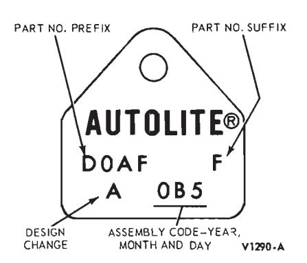
Fig. 1 — Typical Carburetor Identification Tag
The 1970 Ford Motor Company car engines are equipped with positive closed-type crankcase ventilation and exhaust emission systems to aid in the control of engine emissions so they will operate within Government specifications.
Any modification of the fuel system on exhaust emission engines is subject to the penalties of Federal law if made prior to the first sale and registration, and may be subject to penalties under the laws of some states if made thereafter.
To maintain the specified exhaust emission levels, the carburetor as well as other engine system components must be kept in good operating condition and adjusted to specifications.
This part covers the general fuel system performance specifications and adjustment procedures most commonly required within the fuel system. In addition, removal and installation and cleaning and inspection of the air cleaner, carburetor and fuel pump are included.
For other fuel system adjustments, component disassembly, assembly and repair procedures, refer to the pertinent part of this manual.
The carburetor identification tag is attached to the carburetor. The basic part number for all carburetors is 9510. To procure replacement parts, it is necessary to know the part number prefix and suffix and, in some instances, the design change code (Fig. 1).
Always refer to the Master Parts list for parts usage and interchangeability before replacing a carburetor or a component part for a carburetor.
1 Performance Specifications
| GE | GENERAL | = | IGNITION | FUEL | |||||||||||||
|---|---|---|---|---|---|---|---|---|---|---|---|---|---|---|---|---|---|
| Engine CID | 3 ~ | Curb Idle RPM © | Fast | Fast Idle RPM | Spa. | Spark Plugs | Distr | Distributor | Initial Ignition | Idle Air-Fuel Ratio | -Fuel | Anti-Stall Dashpot | tall | Automatic Choke | latic ke | Acc | Accelerating Pump |
| Manual | Auto | Manual | Auto | Gap | No. | Point Gap | Dwell Angle | Timing (8TDC) | Manual Auto | - | Manual Aut | ance | Setting Manual Aut | ing Auto | Manual | Setting Auto | |
| 170 1-V Six | 750 | 550 | 0.036,70 | 0.035.10 | DE 92 | - | - | 14.45 | 7 | Index | ’ | ||||||
| 200 1 V Six | 750 | 550 | 0.033 | 70-10 | 1/ | 1/64” | |||||||||||
| with air cond. | 800 | 0.031”(2) | 0.036”(2) | 14.45 | 14. 20 | • | Index | ex | , | ı | |||||||
| 240 1-V Six | 800/500 (2) | 0.029”(2) | 0.035”© | BF.42 BTF.6 (1) | 0.027” | 35°.40° | - °9 – | 14.70 | 7/64” | 1-Lean | I | ||||||
| 250 1-V Six with air cond. | 750/500 (2) | 550 600/500 © 0.040 | 0.040”(2) | 0.046’(2) | BF.82 | 14.20 | Solenoid | 7/32” | ludex | 1.Rich | 0.4 Clos | 0.400” From Closed Throttle | |||||
| 302 2-V V-8 | 800/200 | 575 | Τ | 1/8′′ | No. 3 Hole | No. 2 Hole | |||||||||||
| with air cond. | 0 | 600/500 © | 1400 | 1500 | BF-42 | 0.021” | 24°.29° | → | 12.50 | Solenoid | 1-Rich | ch | Lev | Lever·Inboard | |||
| 302 4-V BOSS | 800/500 (2) | 1 | AF-32 | 0.020” Dual Points | 30°.33° | 16° | 13.50 | _ | I | ı | |||||||
| 351 C 2·V V·8 with air cond. | 700/500 (2) | 009 600/200@ | 1500 | AF-42 | - | - | ← | 12.90 | 11.40 | 1/8”. Solenoid | Index | 1-Rich | No. 4 Hole Lev | ole No. 3 Hole Lever-Inboard | |||
| 351 C 4-V V-8 | 800/500 | 0301 | 9 | — 0 | AF 20 | _ : | -000 | °9 — | 10.15 | 3000 | 0.080. | , | 0.42 | 0.425” (±0.020”) | |||
| 351 W 2,V V.8 | 700/500 | 575 | 1630 | 1400 | 76 - Ju | 0.021 | 67: 47 | _ | $\top$ | aT | nionalos | 30remond | = | ų, | No 3 Hote | No 4 Hote | |
| with air cond. | () () () | 500@ | 1300 | 1600 | BF.42 | 10° | 12.05 | 12.80 | . J | Solenoid | 7·7 | 2.Lean | , | ÷ | |||
| 390 2-V V-8 | 750/500 | 575 | · @ | 9 | - | 1 | 11 | 1/8,, | 2 | No. 3 Hole | |||||||
| with air cond. | · | 600/500© 1400 | 1400 | 1500 | 0.021” | 24°-29° | 13.33 | 12.20 | Solenoid | 1-Rich | 2-Rich | Lev | Lever-Inboard | ||||
| 428 4.V V.8 Police, | 009 | 1 | 1 | 14.30 | 0.560 Pump | 0.560” (±0.020”) Pump Stem Height | |||||||||||
| with air cond. | 600/500 © | 1600 | 0.021” | 24°.29° | .9 | 0.080” | 2-Rich | Сh | |||||||||
| 428 4.V V-8 Cobra Jet | 725 | 675 | BF-32 | 0.020” Dual | 30°.33° | 0 | 0.140” | 0.200” | 0.015 | 0.015” (Minimum) | |||||||
| with air cond. | 725/500 © | 725/500© 675/500 © | 1900 | 2100 | Points | 13.80 | ᡖ | pio | Overri | Override Spring Adj. | |||||||
| 428 4.V V-8 725 675 Super Cobra Jet 725/500© 675/500© | 725 725/500(2) | 675 675/500© | 8 | • | 0.140” 0.2 Solenoid | 0.200” | ١ | ||||||||||
| 429 2-V V-8 | 590 | 1400 | DE 43 | ١ | 0, 01 | 7.0 | 1071 | 10.00 | 2- | No. 3 Hole | |||||||
| 429 4.V V.8 | 2000,000 | BF.42 | 3 | 1 | 2/1 | Z.W.C | 0 490 + 0 0 | + 0 000’, 0 40E + 0 000’, | |||||||||
| with air cond. | Ş | 009 | 1400 | 1300 | BRF-42 | 0.021” | 24°.29° | 12.65 | 12.80 | 0.070. | Index | * | o. 480 ≅ o. Pump | Pump stem height | |||
| 429 4.V V-8 Cobra Jet | 8 | 650 | 750 | 1850 | - | Index | * | Pump Rod Location | |||||||||
| with air cond. | 700/500© | 700/500© 650/500© | 14.40 | 14.50 | Solenoid | bid | 1-Rich | 당 | Outboard | ||||||||
| 429 4.V V.8 Super Cobra Jet | 650/500 (2) 700/500 (2) | 2400 | 2200 | AF-32 | 00 **** | - | - | 2-Rich | £ | ||||||||
| 429 4.V V-8 BOSS | 700/500 © | 1 | 2200 | ı | 0.020” Dual Points | 30°.33° | 14.20 | л | Solenoid | 1 | 1 | ||||||
| 460 4-V V-8 | 1 | 009 | 1250 | _ | BF-42 | 0.017” | 26°-31° | .9 | ı | 12.05 | 0.100 | 1.Rich | 0.4 Pun | 0.425 (±0.020”) Pump Stem Height | |||
| © Headlamps on Hi-Beam—Air Conditioning OF | i-Beam-Aiı | Condition | ing OFF (i | F (if equipped) | (2) Thr | 3 Throttle Plate Clearance | o Clearan | 94 | () (C | ala dianh | rann diet | O software | 017” 2015 | C ban and 1- | Single disphram distributes 0.017” aniat and 260 319 duell and |
Fig. 2 — Performance Specifications—Fuel System
2 Performance Adjustments
The adjustments described and illustrated in this part should be performed as required to help maintain the exhaust emission control as specified by Government regulations and to retain the desired engine performance characteristics. Refer to the Performance Specifications whenever carburetor adjustments are made.
The following adjustments are similar for all carburetors; only the location of the adjustment points vary. Refer to Parts 02 through 07 in this Group for other adjustment and repair procedures on specific carburetor models.
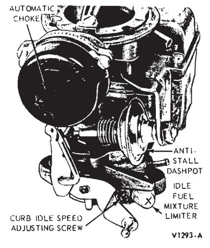
Fig. 3 — Carburetor Adjustments—Carter Model YF 1-V
Idle Speed and Fuel Mixture
All carburetors on engines manufactured for use in the U.S. are equipped with idle fuel mixture adjusting limiters. The limiters control the maximum idle richness and help prevent unauthorized persons from making overly rich idle adjustments.
The plastic idle limiter cap is installed on the head of the idle fuel mixture adjusting screw(s), (Figs. 3 through 8). Any adjustment made on carburetors having this type of limiter must be within the range of the idle adjusting limiter. Under no circumstances are the idle adjusting limiters or the limiter stops on the carburetor to be mutilated or deformed to render the limiters inoperative. On the Autolite model 2100-D 2-V carburetor, the power valve cover must be installed with the limiter stops on the cover in position to provide a positive stop for tabs on the idle adjusting limiters (Fig. 5).
A satisfactory idle should be ob- tainable within the range of the idle adjusting limiters, if all other engine systems are operating within specifications.
At pre-delivery, follow the Normal Idle Fuel Settings for both Engine Off and Engine On and in Step 1 of Additional Idle Speed and Fuel Mixture Procedures. Other fuel system adjustments should not be required at pre-delivery service.
Following are the normal procedures necessary to properly adjust the engine idle speed and fuel mixture. The specific operations should be followed in the sequence given whenever the idle speed or idle fuel adjustments are made.
In isolated cases, a satisfactory idle condition may not be achieved by performing the normal procedures. If this occurs, refer to Additional Idle Speed and Fuel Mixture Procedures.
Normal Idle Fuel Settings—Engine OFF
-
Set the idle fuel mixture screw(s) and limiter cap(s) to the full-counterclockwise position of the limiter cap(s) as illustrated in Fig. 2.
On export vehicles not equipped with exhaust emission control systems, establish an initial idle mixture screw setting by turning each screw inward until it is lightly seated; then turn it outward 1-1/2 turns. Do not turn the screws tightly against the screw seat, as this may damage the end of the screw. If the screw end is damaged, it must be replaced before a satisfactory adjustment can be obtained.
Back off the curb idle speed ad-IDLE ADJUSTING LIMITERS
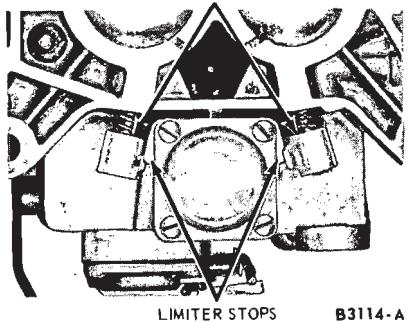
Fig. 5 — Autolite Model 2100-D 2-V Idle Fuel Mixture Adjusting Limiters and Limiter Stops-Bottom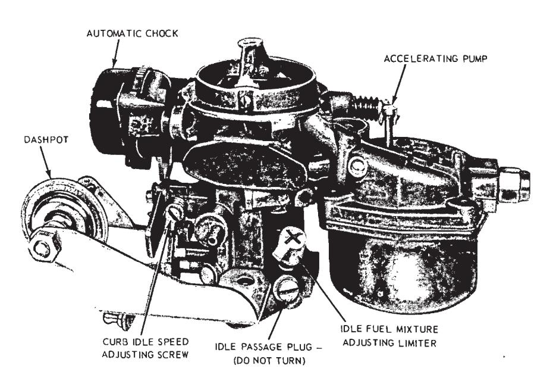
Fig. 4 — Carburetor Adjustments—Carter Model RBS 1-V justing screw (Fig. 9) until the throttle plate(s) seat in the throttle bore(s).
-
Be sure the dashpot or solenoid throttle positioner (if so equipped) is not interfering with the throttle lever (Fig. 10).
It may be necessary to loosen the dashpot or solenoid to allow the throttle plate(s) to seat in the throttle bore(s).
-
Turn the idle speed adjusting screw inward until it just makes contact with the screw stop on the throttle shaft and lever assembly. Then, turn the screw inward 1 1/2 turns to establish a preliminary idle speed adjustment (Fig. 9).
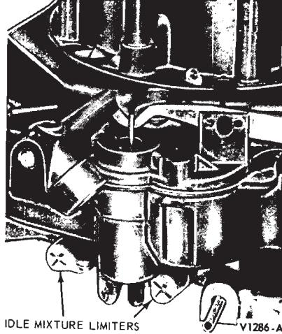
Fig. 6 — Idle Fuel Mixture Adjusting Limiters—Autolite 4300 4-V -
Set the parking brake while making idle mixture and speed adjustments. On a vehicle with a vacuum release parking brake, remove the vacuum line from the power unit of the vacuum release parking brake assembly. Plug the vacuum line, then set the parking brake. The vacuum power unit must be deactivated to keep the parking brake engaged when the engine is running with the transmission in Drive.
Normal Idle Fuel Settings—Engine on
-
The engine and underhood temperatures must be stabilized before idle adjustments are made. Run the engine a minimum of 20 minutes at 1500 rpm. This can be done by positioning the fast idle screw or cam follower on the kickdown step of the fast idle cam (Figs. 11 through 14).
-
Check the initial ignition timing and the distributor advance and retard as described in Part 22-01. Use an accurate-reading tachometer and timing light when checking the initial ignition timing and idle fuel mixture and speed.
-
On vehicles with a manual-shift transmission, the idle setting must be made only when the transmission is in Neutral.
On vehicles with an automatic transmission, the idle setting is made with the transmission selector lever in the Drive range, except as noted when using an exhaust gas analyzer.
-
Be sure the choke plate is in the full-open position.
-
On carburetors equipped with a hot idle compensator, be sure the compensator is seated to allow for proper idle adjustment (Fig. 15).
-
Turn the headlights on high beam to place the alternator under a load condition in order to properly adjust to the specified engine idle speed.
-
The final idle speed adjustment is made with the air conditioner (if equipped) turned OFF.
-
Adjust the engine curb idle rpm to specifications. The tachometer reading (rpm) must be taken with the air cleaner installed. On vehicles with less than 50 miles, set the idle speed approximately 25 rpm below specifications to allow for an rpm increase as the engine loosens up in the first 100 miles of driving.
If it is not possible to adjust the idle speed with the air cleaner installed; remove it, make the adjustment, then replace the air cleaner and check again for the specified rpm.
On the Autolite 2-V and Rochester 4-V carburetors equipped with a solenoid throttle positioner, turn the solenoid assembly in or out of the brack-
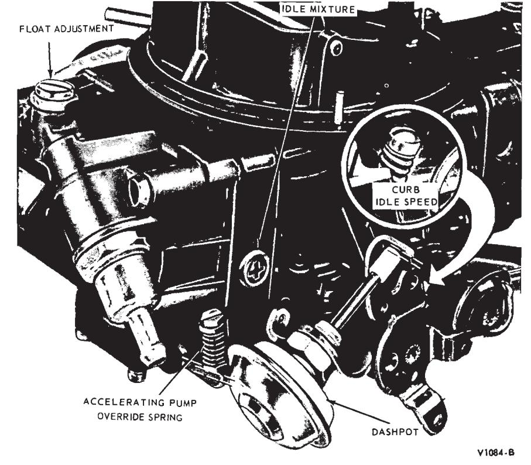
Fig. 7 — Carburetor Adjustments—Holley Model 4150-C 4-V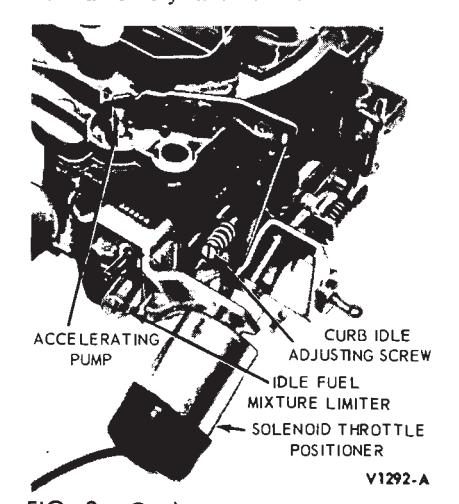
Fig. 8 — Carburetor Adjustments—Rochester Quadrajet Model 4MV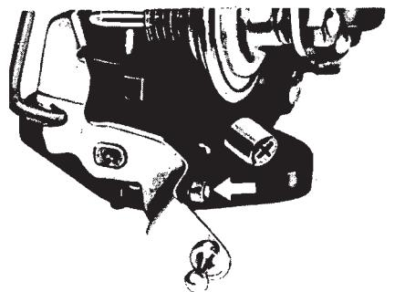
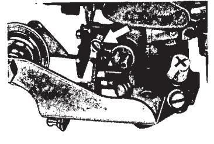
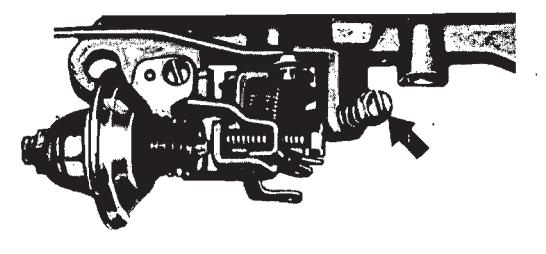
CARTER MODEL YF 1-V
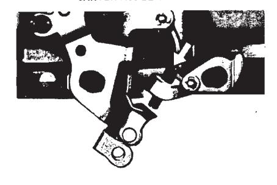
AUTOLITE MODEL 4300 4-V
CARTER MODEL RBS 1-V
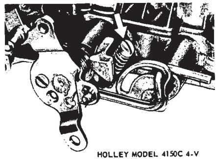
AUTOLITE MODEL 2100-D, 2-V
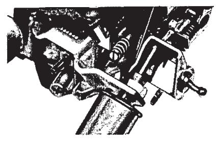
ROCHESTER MODEL 4 MV
Fig. 9 — Curb Idle Speed Adjusting Screws et to obtain the specified curb idle rpm, then tighten the lock nut. Disconnect the solenoid lead wire at the bullet connector, then adjust the carburetor throttle stop screw to obtain 500 rpm. Connect the solenoid lead wire and open the throttle slightly by hand. The solenoid plunger will follow the throttle lever and remain in the fully extended position as long as the ignition is on and the solenoid is energized.
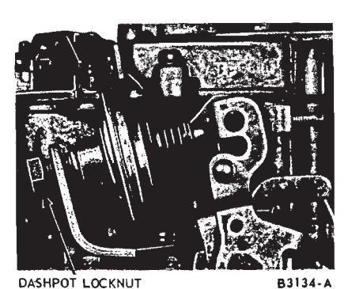
Fig. 10 — Dashpot—TypicalOn the Carter 1-V, Autolite 4-V and Holley 4-V carburetors equipped with a solenoid throttle positioner (Fig. 16), turn the solenoid plunger screw in or out to obtain the specified curb idle rpm. Disconnect the solenoid lead wire at the bullet connector near the loom, then adjust the carburetor throttle stop screw to obtain 500 rpm. Connect the solenoid lead wire and open the throttle slightly by hand. The solenoid plunger will follow the throttle lever and remain in the fully extended position as long as the ignition is on and the solenoid is energized.
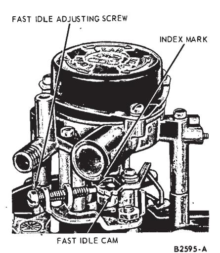
Fig. 11 — Fast Idle Speed Adjustment—Autolite Model 2100-D 2-V -
Turn the idle mixture adjusting screw(s) inward to obtain the smoothest idle possible within the range of the idle limiter(s).
On 2- and 4-venturi carburetors, turn the idle mixture adjusting screws inward an equal amount.
Check for idle smoothness only with the air cleaner installed.
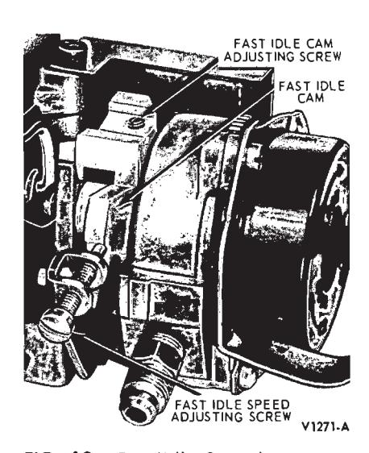
Fig. 12 — Fast Idle Speed Adjustment—Autolite Model 4300 4-V
Additional Idle Speed and Fuel Mixture Procedures
If a satisfactory idle condition is not obtained after performing the preceding normal idle fuel settings, additional checks of engine systems must be performed.
-
The following items should be checked and, if required, corrected.
- a. Vacuum leaks (Refer to the Wiring and Vacuum Diagrams Manual Form 7795P-70 for vacuum schematic diagrams and the locations of the vacuum lines).
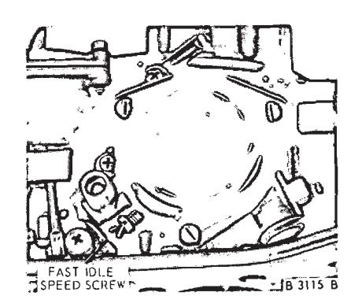
Fig. 13 — Fast Idle Speed Adjustment—Holley Model 4150-C 4-V- b. Ignition system wiring continui
- c. Spark plugs
- d. Distributor breaker point dwell angle
- e. Distributor point condition
- f. Initial ignition timing
In certain instances, it may be possible that the idle condition is not as good as normally expected. It is suggested that the customer with a new vehicle be advised that the vehicle be driven 50 to 100 miles. Then, when the engine friction has been reduced, the idle condition should be improved. If, after the break-in period, the idle condition is believed to be unsatisfactory, readjust the engine idle speed to specification and observe for a satisfactory idle.
-
If the idle condition is not improved after the items in Step 1 have been checked, perform the following engine mechanical checks;
- a. Fuel Level
- b. Crankcase ventilation system
- c. Valve clearance (using the collapsed tappet method for hydraulic valves)
- d. Engine compression
-
After verification of all engine systems has been made, there may be isolated cases where a satisfactory idle condition has not been obtained, due possibly to a lean idle fuel mixture. If this condition is encountered, check the air-fuel ratio with the aid of an exhaust gas analyzer, and adjust the air-fuel ratio to specifications.